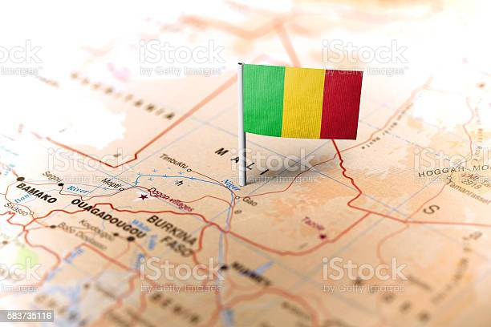

Malian dishes are absolutely superb which shouldn't be a surprise as Mali is one of the most beautiful countries in Africa. The country offers a blissful retreat to the tourists with its unique mélange of bizarre landscapes, beautiful artwork, spectacular mosques made entirely of mud, pink sandstone villages, and long stretches of undulating desserts, and its cuisine is just something else. The country is definitely one you should visit and we have the perfect food guide to get your belly some new delicious cravings. But first, what is Mali all about? Mali is a landlocked country in West Africa, formally known as the Republic of Mali. Mali is Africas eighth-largest country, with little over 1,240,000 square kilometers, and has a population of 19.1 million people. The name Mali is taken from the name of the Mali Empire. The name means “the place where the king lives and carries a connotation of strength”. Well, we're about to see how much of this strength is put into the country's cuisine. Malian official language is French, which is the result of 68 years of European colonization. Despite the fact that French is Malian official language, only about 5% to 10% of the population speaks it. Mali is home to a diverse range of ethnic groupings and tribes, each of which speaks a different indigenous language some of which include; Bambara, Bomu, Bozo, Dogon, Fulfulde, Hassaniya Arabic, Mamara, Maninkakan, Soninke, Songhay, Syenara, Tamasheq, Xaasongaxango.
 tiguedegue_na